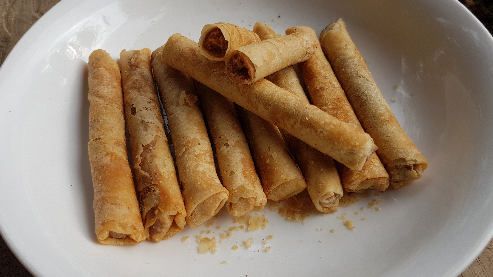

Lumpia came to the Philippines through Chinese cooking, especially from Hokkien communities. The word is Hokkien: lun means moist and pia means pastry.
Lumpia can also be made with vegetables or served fresh instead of fried. Lumpiang sariwa uses a soft wrapper and peanut sauce, lumpiang gulay is packed with vegetables, and turon is the sweet kind made with banana.